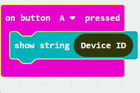
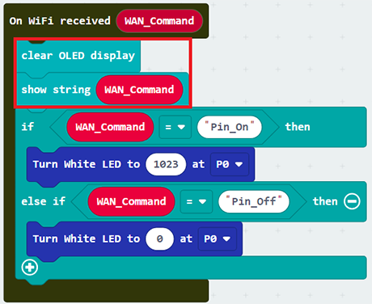
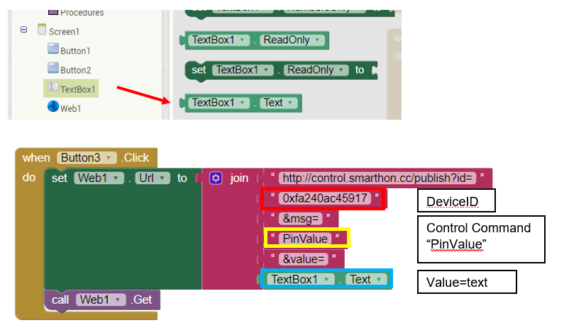

7. Chapter 3: Direct Control micro:bit by App Inventor 2¶
7.1. Introduction¶
App inventor 2 is a blocks-based programming tool, which help beginners to build fully functional app in Android device. The interface is graphical base and support drag and drop operations. It consists of different components, such as button, slider, date pickers, image, camera, sensors including Accelerometer and connectivity to web, etc. The app can be exported or published to Play store for our daily life.

For creating IoT application, you can use App Inventor 2 to create web connection with micro:bit. In WAN control, after micro:bit is connected to internet, it keep listening and execute customized operation when WAN command is received. The customized operation could be Pin On/off, such as “open/close LED”, or set value such as “set the light intensity” and “set current time”.

7.2. Know the API (control command)¶
What is API? API is one way to communicate between the objects in the Internet world. API is just like an “URL” which is website link.
In App inventor, we use “API” to communicate with micro:bit. Normally, we need to know the (1) device ID (2) the message need to be sent to the micro:bit and optionally (3) value if needed.

(1) Basic API:
https://control.smarthon.cc/publish?id=DeviceID&msg=ControlCommand
id: The unique ID of device, used to identify the target .
msg: The command needs to send.
Example: “https://control.smarthon.cc/publish?id=0x123456781&msg=lighton”. In this case, we send the msg command “lighton” to device id “0x123456781”.
(2) Advanced API:
https://control.smarthon.cc/publish?id=DeviceID&msg=ControlCommand&value=Value
id: The unique ID of device, used to identify the target .
msg: The command needs to send.
value(optional): Used when need for the command.
Example: “https://control.smarthon.cc/publish?id=0x123456781&msg=lighton&value=500” . In this case, we send the msg command “lighton” with intensity value “500” to device id “0x123456781”.
7.3. Scenario Example¶
Goal:
This example is to turn on/off micro:bit LED by using app inventor 2.
Description:
In this example, there are 2 parts involved.
In part 1, we need to connect the micro:bit to the internet and get the device ID.
In part 2, design the mobile app and set the API with the device ID from part 1.

7.4. Part 1: Coding¶
Goal:
We need to get the Device ID and set the corresponding action.
Connection Diagram:
Connect LED to P0

Step 1: Connect WiFI
Before we try to use WiFi Control function, we need to connect to the network, we have already know how to connect to the WiFi on the first chapter.

Step 2: Get Device ID
On WiFi connected is an event handler.
It will be triggered once after connected with WiFi.
The handler will provide the Device ID variable which used to identify and control the Microbit.
Go to OLED Tab
Snap
initialize OLED with width…height..toon startSnap the
show stringinside theOn WiFi connectedDraw the
Device IDvariable fromOn WiFi connectedto theshow tringblock placeholder

*If you worried about forget the Device ID during program running, you may access it by the variable under Control tab
Go to Control tab
Snap the
Device IDvariable to the placeholder

Step 3: Control with Command
After connected to the WiFI, the connection to the server will be done automatically, it is ready to receive command though network.
To get the command, we can use the on Wi-Fi received handler in WAN control tab.
Snap the
on WiFi receivedhandler to stageDo the
if-condition statementto the variableWAN_CommandIf
Wan_command“Pin_On” is received, white LED will be turned on (intensity:1023)If
Wan_command“Pin_Off” is received, white LED will be turned off (intensity:0)
Attention: Please be aware that the P is in capital letter.

Step 4: Show the Command
Sometimes you may need to show the recevied command for debugging, so if you need that, you can use the OLED show string to display the command on the OLED.
Go to OLED
Snap the
clear OLED displaytoOn WiFi receivedto avoid overlapSnap the
show stringtoOn WiFi receivedDraw the
WAN_Commandvariable toshow stringplaceholder

Advanced Usage: Command with value
If you want to control the module with value, you can use the another block which contain value variable.
If Wan command “PinValue” is received, white LED will be turned on with the given intensity value.
You may also show the WAN_Command and value by show string.

Full Solution
MakeCode: https://makecode.microbit.org/_bMFRmFYP2fdv
You could also download the program from the following website:
7.5. Part 2: App Inventor 2 configuration¶
Goal:
We need to create mobile app to control the IoT:bit by using API.Step 1: Create Layout
Create a new project in App Inventor 2, on “Designer”
Drag “Layout”>”HorizontalArragement” to the page.
Drag “User Interface” > “Button” twice to the place inside the HorizontalArrangement
Drag Connectivity> “Web” to the page

Step 2: Define Function
Set the program in app inventor 2, on “Blocks”
Take the block as below

When Button 1 and 2 is pressed, it calls the WAN control API respectively http://control.smarthon.cc/publish?id=
DeviceID&msg=ControlCommand

Advanced Usage: Control with value
If you want to control the module with value, you can create in textbox with the button let the user to input the value.Layout:

Programming:
When Button 3 is pressed, it calls the WAN control API respectively
http://control.smarthon.cc/publish?id=0xfa240ac45917&msg=PinValue&value=600

Step 3: Build the apps
Build and test the mobile app.
In App Inventor 2, you can perform real-time testing in your mobile phone by AI Companion

Also, you can also build and download the android app and open it in your mobile phone.

7.6. Result¶
After the WiFI Connected, the Device ID will show

Normal Case:
When Button1 is clicked, it will send WAN command “Pin_On” to the micro:bit with provided Device ID, the LED on P0 will be turned on. When button 2 is clicked, the LED will be turned off.

Control the value(advanced):
When the button 3 is pressed with the intensity of 0 or 600, it will be turned on accordingly.